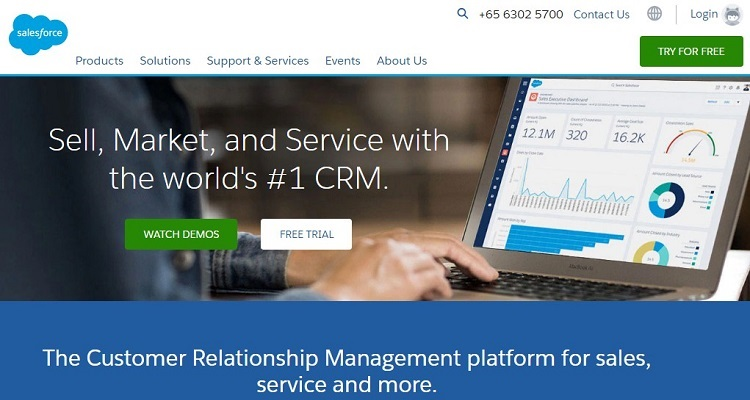

1-SALESFORCE

كانت Salesforce من أوائل الشركات التي نشرت تطبيقاتها على السحابة. في حين أنها اليوم واحدة في بحر من الكثيرين ، إلا أن العلامة التجارية ظلت عالقة ولا تزال رابطًا مهيمنًا بين الشركات والعملاء.
تكمن قوتهم في إدارة علاقات العملاء (CRM) وكان الانتقال إلى SaaS كبيرًا. في الماضي ، كان نظام إدارة علاقات العملاء مكلفًا وعادة ما يكون متاحًا على مستوى المؤسسات نظرًا لتكلفة التنفيذ وتعقيده
=================
2- Zendesk
>
Zendesk هو اسم أصبح مرادفًا لدعم العملاء في جميع أنحاء العالم. إنه مثال لنشر SaaS الذي يقدم خدمة عامة إلى حد ما ، ولكن مع خيارات تخصيص رائعة لدعم مجموعة متنوعة من الشركات.
لا يهم إذا كنت تدير شركة استضافة ويب ، متجر التجارة الإلكترونية، أو حتى مدونة تجارية - يمكن لـ Zendesk تقديم الدعم لأي شيء. يتضمن خطوط مساعدة حيوية للعملاء مثل الهاتف والبريد الإلكتروني الدردشة الحيةووسائل التواصل الاجتماعي والتذاكر عبر الإنترنت والمزيد.
وأفضل ما في الأمر أنه يمكنك توسيع نطاق الخدمة بسرعة وسهولة حسب الحاجة. ليس هناك عمل كبير أو صغير بالنسبة لهم.